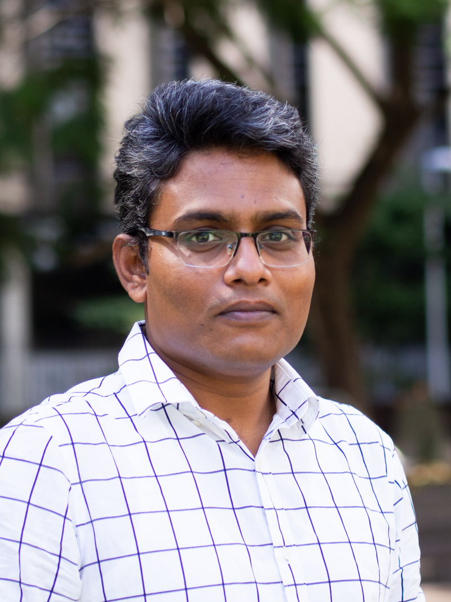
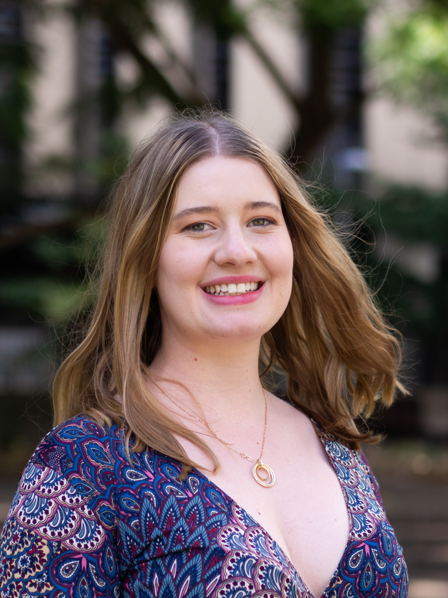

We are a research group in the School of Biotechnology and Biomolecular Science (BABS). We apply biophysical methods in synthetic biology and experimental evolution.
Research
We study complex systems and their origins, working among microbiology, biophysics, synthetic biology and evolutionary biology. Roughly half of us work, at the moment, on the bacterial flagellar motor. We use this as a model molecular complex to explore protein engineering, directed and experimental evolution, and to understand better how bacterial swimming has evolved and how we can push it to do new things.
Roughly the other half of us work on ‘bottom-up’ synthetic biology where we try to use insights gleaned from understanding an ancient molecular complex (the motor) to build new nanotechnologies out of simple lipid and DNA components to see how we can increase the complexity step-by-step to create new tools in biosensing and light-activation.
We welcome applications to join our group and have spaces for PhD applicants and postdocs where suitable. Please contact Matt if you are interested in joining or collaborating.
Projects
We have the following research projects currently active in the lab:
Project 1: Evolution across interfaces
In this project we explore the directed evolution of the flagellar motor in the lab by evolving it to swim under different energy sources and selecting for motility. We aim to explore how motility evolves across interfaces, when a bacterium faces a change in environment between, for example, H+ and Na+ environments, and how the bacteria adapts to dwindling nutrient across this interface. This project has scope for designing and building custom tanks to optimise bacterial evolution using 3D printing and prototyping, as well as investigating microbiology and bacterial motility in multiple dimensions using layered swim devices.
Project 2: Ancestral Reconstruction of the Bacterial Flagellar motor
We recreate microbial ‘Jurassic Parks’ by resurrecting ancient flagellar motor componentry in contemporary hosts and measuring how well they work. This allows us to create ancient motors that have never existed in the present day to synthesise and evolve new motors as well as to learn about the process of evolution. We have examine in detail reconstructions of the stators that power the motor and now seek to examine how the rotor has evolved and can be engineered for new applications.
Project 2: Origins of motility.
The evolutionary origins of the bacterial flagellum have been a subject of scientific and public controversy – how can evolution produce such a complex system? We believe we can make progress on the issue by updating old phylogenetic work with new datasets and improved models, and combining this with experimental evolution work being done in our labs. The project is to assemble a well-organized database of flagellar proteins and explore sequenced bacterial genomes with genome browsers and sequence-similarity searches.
Project 3: Regulation of membrane protein Insertion in artificial bilayers using DNA origami
Our droplet hydrogel bilayer system is an artificial bilayer system for interrogating membrane proteins, but it also allows us to explore new forms of synthetic biology where we can add individual protein function to a droplet, such as touch sensitivity or light sensitivity. Using a DNA origami nanostructures we can protect and controllably release our blocking DNA structures to direct the fusion of liposomes and control which reactions take place where in these droplets. This allows us to trigger functionality, on demand, using light and electrical signals. This project involves in vitro synthetic biology, DNA and lipid nanotechnologies and microscopy.
Project 4: Mechanism of mechanosensing in PIEZO1
Droplet Hydrogel Bilayers are capable of simultaneous single channel current and fluorescence measurements. They have been used to characterise the functionality of alpha-haemolysin for use in nucleobase recognition in DNA sequencing and they have been arranged in multiple arrays to parallelise high throughput channel measurements. We use this platform to investigate other force-sensitive ion channels which are generally linked to cancer progression and post-traumatic osteoarthritis. Our next goal is to combine fluorescence with electrophysiology using labelled constructs for single molecule fluorescence.
Project 5: Applications of the Flagellar Motor to Fluid Flows
We utilise the high efficiency and self assembly of the flagellar motor to drive rotation of cells on patterned surfaces to control mixing and fluid flows in microfluidics. We have projects involving designing and building new devices to apply the flagellar motor onto other things. This project suits someone with aninterest in DIY/maker culture.
Team

Matt Baker

Matt completed his DPhil at Oxford University studying the molecular motor that makes many bacteria swim and that is where he first learned to love microbiology where you could work with complex living systems but also put them ‘on ice’ when you needed to. Matt started this group at BABS in 2018, and has a love of radio. For a more detailed profile see Matt’s UNSW profile here or his linktree for some recent radio.
Pietro Ridone

Pietro joined the lab in July 2019 for his first Postdoc and has since been applying genome editing and synthetic biology techniques to study the stator proteins powering the rotation of bacterial flagella. Born and bred in Florence, Italy, has been fascinated by synthetic biology since the early days of his bachelor years at the University of Glasgow (Scotland, 2008-2012) where he also joined the Glasgow iGEM team for the 2011 edition of the competition. He studied the biophysics of bacterial and human mechanosensitive channels (MscS, MscL and Piezo1) during his PhD in the lab of Prof. Boris Martinac (VCCRI, Sydney), before returning to synbio at the Baker lab. He is currently focusing on engineering the E.coli genome using CRISPR and designing artificial stators to study the evolvability of the bacterial flagellar system. When away from lab duties he can be found roaming around campus in search of strong coffees or defending a goal on the football pitches of Moore park.
Alex Mason

Alex is our resident chemistry guru, having completed his PhD in Chemistry in 2017 at UNSW Sydney, where he was focused on building an artificial mitochondria by combining polymer vesicles with purified proteins from the electron transport chain. For his first postdoc, he moved overseas to the van Hest group at the Eindhoven University of Technology (the Netherlands), to develop artificial cells made from liquid-liquid phase separated materials. He moved back to Sydney in 2021, where he is now investigating the biophysics of DNA-based functional objects (such as pores) in planar lipid membranes, with the ultimate aim to build networks of light-addressable droplets capable of signal transduction. In his spare time, Alex loves to cook, grow vegetables, go scuba diving, and hang out with his dog Rusty.
Md Sirajul Islam

Sirajul is a postdoctoral researcher in Baker lab. His current research is focusing on bio-nanotechnology with specific aim of developing protein, lipid and DNA origami based nano-systems for applications in smart drug delivery system, vaccine development and nanomedicine. He completed his PhD from Hokkaido University, Japan. During his PhD tenure and postdoc research in Kansai University, he studied the dynamics of microtubule, self-organization of biomolecular motor protein systems under cell-like confinement and their muscle-like contraction with DNA origami. He moved to Baker lab from Heddle lab in Jagiellonian University, Poland, where he worked as a postdoc in a project to develop an artificial cell system. His is originally from Bangladesh, where he completed his bachelor and master’s degree from the University of Dhaka.
Md Imtiazul Islam

Imtiaz is a final year PhD student in the Baker Lab. He is from Bangladesh and is working on the ancestral sequence reconstructions of the bacterial flagellar motor, specifically the stator proteins (MotA and MotB).
Jyoti Gurung

Janelle Ramos

James Gaston

Imogen Kelly

Vibhuti Nandel

Sehhaj Grewal
Alumni
Gonzalo Peralta (Hons 2016)
Jessica Clark (Hons 2018)
Oskar Jaggers (Hons 2018)
Es Darley (Hons 2019)
Joon Bae (Hons 2020)
Angela Lin (Biomedical Engineering 2020)
Dr Yu-Wen Lai (Postdoc 2017)
Recent Papers
Preprints
Spontaneous adaptation of ion selectivity in a bacterial flagellar motor
Ridone, Ishida, Lin, Humphreys, Giannoulatou, Sowa, Baker.
bioRxiv
| PDF
| bioRxiv |
2021
Binding of DNA origami to lipids: maximizing yield and switching via strand displacement
Daljit Singh, Darley, Ridone, Gaston, Abbas, Wickham, Baker.
Nucleic Acids Research
| journal |
Fluorescence Approaches for Characterizing Ion Channels in Synthetic Bilayers
Islam, Gaston, Baker.
Membranes
| journal |
Novel Amiloride Derivatives That Inhibit Bacterial Motility across Multiple Strains and Stator Types
Islam, Bae, Ishida, Ridone, Lin, Kelso, Sowa, Buckley, Baker.
Journal of Bacteriology
| journal |
Pushing the super-resolution limit: recent improvements in microscopy below the diffraction limit
Nieves, Baker.
Biochemical Society Transactions
| journal |
Flagellar export apparatus and ATP synthetase: Homology evidenced by synteny predating the Last Universal Common Ancestor
Matzke, Lin, Stone, Baker.
BioEssays
| PDF
| journal |
Earlier publications can be viewed on Matt’s Google Scholar.
Contact
School of Biotechnology and Biomolecular Science
Find us:
Biosciences
Room 301 (Level 3) D26
UNSW Kensington Campus
Send something:
Attention: Matt Baker
BABS
Upper Campus Store E26, Bioscience South
LG018 Loading Dock
Via Gate 11, Botany Street
UNSW Sydney NSW 2052
Australia